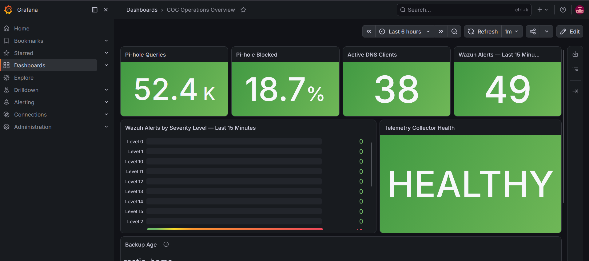

PHASE 10 IN PROGRESS
Cyber Operations Center Engineering Program
Phase 10 has reached a validated pre-attack identity baseline: Windows Server 2025 AD DS/DNS, a Windows 11 Enterprise domain client, AGDLP-based delegated administration, separate everyday/admin/Tier-0 identities, Tier-0 workstation restrictions, advanced auditing, machine-account quota hardening and clean restore snapshots. Controlled attack, detection, investigation and remediation are next. Phase 9 Nextcloud remains complete.